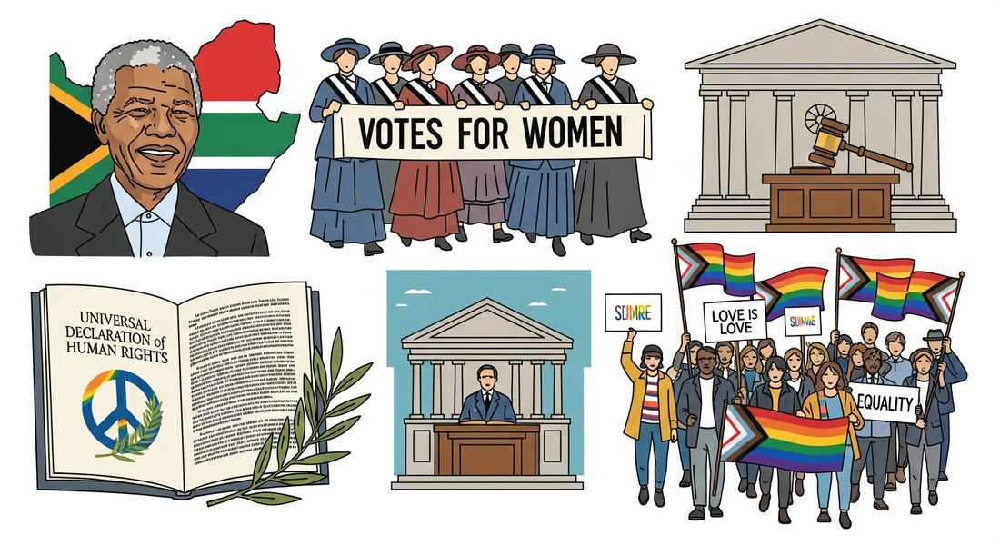

9.5 Calls for Reform and Responses After 1900
- LO-A: Rights-based discourses challenged old hierarchies: The 20th century saw powerful challenges to assumptions about race, class, gender, and religion. The UN Universal Declaration of Human Rights (1948), global feminist movements, the Negritude movement, and liberation theology in Latin America all articulated visions of universal human dignity that challenged traditional inequalities. Women's political and professional inclusion expanded: Women gained the right to vote and hold public office across the world: US (1920), Brazil (1932), Turkey (1934), Japan (1945), India (1947), Morocco (1963). Rising female literacy and increasing numbers of women in higher education transformed social roles globally, though significant gender inequality persisted. Racial equality movements achieved landmark changes: The US Civil Rights Act of 1965 dismantled legal segregation; the end of apartheid in South Africa (1994) eliminated institutionalized racial hierarchy; caste reservation policies in India attempted to redress centuries of discrimination. These represented major reforms, though systemic inequality persisted. Movements protested environmental and economic inequality: Greenpeace challenged environmental destruction; Professor Wangari Maathai's Green Belt Movement in Kenya linked environmental conservation to women's empowerment; the World Fair Trade Organization promoted equitable trade relationships. These movements connected social justice to economic and environmental issues.
Try each question before revealing the answer.
1. What was the Negritude movement and how did it challenge assumptions about race?
2. What is liberation theology and why was it significant in Latin America?
3. How did Professor Wangari Maathai's Green Belt Movement connect environmental and social justice?
- Explain how social categories, roles, and practices have been maintained and challenged over time, including rights-based discourses on race, class, and gender, expanded access to education and political roles, and movements protesting inequality from global integration
Tap a term for its definition.
-
Definition: A framework that frames social and political claims in terms of universal human rights, arguing that certain protections and freedoms belong to all people regardless of race, class, gender, or religion. Significance: The UN Universal Declaration of Human Rights (1948) became the foundational document of global rights-based advocacy.
-
Definition: A 1948 document adopted by the UN General Assembly declaring universal rights for all humans regardless of nationality, race, religion, or gender. Significance: CED illustrative example; provided the moral and legal framework for reform movements worldwide throughout the 20th century.
-
Definition: A 1930s–40s literary and intellectual movement by Black writers from French colonies that celebrated African identity and heritage in response to European racism and colonialism. Significance: CED illustrative example; challenged assumptions about racial hierarchy and influenced anti-colonial movements and Black consciousness globally.
-
Definition: A Catholic theological movement in Latin America from the 1960s arguing that the Church has a special obligation to the poor and must work for social justice. Significance: CED illustrative example; challenged religious acceptance of social inequality and provided moral authority for reform movements.
-
Definition: The South African system of institutionalized racial segregation and discrimination from 1948 to 1994. Significance: CED illustrative example; its end after Nelson Mandela's election in 1994 represented a major victory for global anti-racist movements.
-
Definition: An environmental and women's empowerment organization founded by Professor Wangari Maathai in Kenya in 1977, focused on tree-planting and community development. Significance: CED illustrative example; linked environmental protection, women's rights, and democracy in a single grassroots movement.
📜 Rights-Based Discourses Challenge Old Assumptions (KC-6.3.III.i)
One of the defining features of the 20th century was the rise of powerful movements challenging inherited assumptions about the natural or appropriate hierarchy of human beings based on race, class, gender, and religion. The AP CED identifies this development as a key concept: "Rights-based discourses challenged old assumptions about race, class, gender, and religion."
The foundational document of this global shift was the UN Universal Declaration of Human Rights, adopted by the UN General Assembly in 1948. Drafted in the immediate aftermath of the Holocaust and WWII, the Declaration asserted that all human beings are "born free and equal in dignity and rights" regardless of race, color, sex, language, religion, national origin, or social origin. It proclaimed rights to life, liberty, and security; freedom from torture; freedom of thought, conscience, and religion; the right to education; and many others. The CED specifically notes its importance "especially as it sought to protect the rights of children, women, and refugees."
The Declaration did not automatically produce equality, its proclamations were frequently violated by the governments that adopted it. But it provided a powerful moral and legal framework that reform movements worldwide could use to hold governments accountable. Activists could now point to international law and global norms when challenging discrimination, persecution, or exploitation.
Global feminism challenged assumptions about gender hierarchy, arguing that women deserved equal political, economic, and social rights. The feminist movements of the 1960s–70s, particularly strong in the US, Western Europe, and Australia, pushed for equal pay, reproductive rights, educational access, and freedom from domestic violence. Internationally, the UN Decade for Women (1976–1985) and the Convention on the Elimination of All Forms of Discrimination Against Women (CEDAW, 1979) extended feminist frameworks globally. The Negritude movement challenged racial assumptions by celebrating African identity and culture as intrinsically valuable, directly refuting the racial hierarchy that had justified colonialism and slavery.

Image credit not specified.
AI-generated illustration (Google Gemini, 2025), commercially licensed.
🗳️ Women's Political Inclusion Expands (KC-6.3.III.ii)
The 20th century witnessed a global expansion of women's political rights that the CED specifically traces through a list of illustrative examples. Women's suffrage, the right to vote, spread worldwide across the century:
- United States (1920), the 19th Amendment granted women the right to vote after decades of suffrage activism
- Brazil (1932), women gained voting rights under Getúlio Vargas's provisional government
- Turkey (1934), Mustafa Kemal Atatürk's modernization program included women's suffrage, one of the earliest in the Muslim world
- Japan (1945), women's suffrage was established under the postwar US occupation's democratic reforms
- India (1947), universal adult suffrage was included in India's independence constitution
- Morocco (1963), women gained full voting rights after independence from France
The CED also points to rising female literacy rates and increasing numbers of women in higher education "in most parts of the world" as part of this expansion of inclusion. As more women gained education, they entered professional and political roles in growing numbers, as lawyers, doctors, politicians, executives. By the early 21st century, women served as heads of government in countries ranging from Germany (Angela Merkel) to New Zealand (Jacinda Ardern) to Chile (Michelle Bachelet), though significant gender gaps in political representation and economic opportunity persisted globally.
✊ Racial Equality and Anti-Discrimination Movements (KC-6.3.III.ii)
The CED identifies three specific illustrative examples of expanded racial and social inclusion: the US Civil Rights Act of 1965, the end of apartheid, and caste reservation in India. Each represented a major challenge to existing hierarchies of race and caste.
The US Civil Rights Act of 1965 (along with the Civil Rights Act of 1964 and the Voting Rights Act of 1965) dismantled the legal architecture of racial segregation in the American South. After decades of organizing, marches, sit-ins, freedom rides, legal challenges, the Civil Rights Movement achieved landmark legislation that prohibited discrimination based on race, color, religion, sex, or national origin in employment and public accommodations, and protected Black Americans' voting rights. Led by figures like Martin Luther King Jr., John Lewis, and Rosa Parks, the movement demonstrated that sustained, organized nonviolent resistance could change law and social norms, inspiring movements worldwide.
The end of apartheid in South Africa came after decades of international pressure, internal resistance, and the imprisonment of Nelson Mandela (1964–1990). When Mandela was released and South Africa held its first democratic elections in 1994, the system of institutionalized racial hierarchy that had classified people by race and confined Black South Africans to poverty and political exclusion was officially dismantled. Mandela's election as president was one of the most celebrated political transitions of the 20th century.
Caste reservation in India (a form of affirmative action) set aside seats in universities, government jobs, and legislatures for members of historically discriminated-against castes, the "Scheduled Castes" (formerly called "untouchables" or Dalits) and "Other Backward Classes." Championed by B.R. Ambedkar, the architect of India's constitution who was himself a Dalit, reservation policies aimed to redress centuries of caste discrimination. They remained deeply controversial, generating both political support from beneficiaries and fierce opposition from higher-caste groups who felt displaced.
🌿 Movements Protest Economic and Environmental Inequality (KC-6.3.II.C)
The CED identifies another strand of reform: "Movements throughout the world protested the inequality of the environmental and economic consequences of global integration." Three illustrative examples capture the range of these movements: Greenpeace, Professor Wangari Maathai's Green Belt Movement, and the World Fair Trade Organization.
Greenpeace, founded in Vancouver in 1971, was one of the most visible environmental organizations of the late 20th century. Using direct action, sailing ships into nuclear test zones, blockading whaling vessels, unfurling banners at polluting factories. Greenpeace brought environmental issues into public consciousness worldwide. It combined protest, media savvy, and moral authority to challenge governments and corporations on nuclear testing, whaling, toxic waste dumping, and climate change.
Professor Wangari Maathai, the first African woman to win the Nobel Peace Prize (2004), founded the Green Belt Movement in Kenya in 1977, initially to address deforestation by organizing women to plant trees. The movement grew into a broad platform connecting environmental sustainability, women's rights, democracy, and anti-corruption. It planted over 51 million trees and transformed the lives of tens of thousands of rural women who gained education, income, and political voice through their participation. Maathai's work demonstrated how environmental, gender, and political justice could be addressed as interconnected issues.
The World Fair Trade Organization addressed the economic inequalities of global trade by promoting "fair trade", ensuring that producers in developing countries received fair prices for their goods, safe working conditions, and direct trade relationships without exploitative middlemen. The fair trade movement grew significantly in the 1990s–2000s, with certified fair trade coffee, chocolate, and other products becoming widely available in wealthy-country markets. It represented an attempt to reform, rather than reject, global trade by building equity into commercial relationships.
These videos will help you review Calls for Reform and Responses After 1900 and solidify key concepts before your exam.
- established international military enforcement of human rights protections.
- replaced national constitutions as the primary source of legal rights for citizens.
- provided a rights-based discourse framework that challenged old assumptions about race, class, gender, and religion.
- was unanimously adopted by all member nations of the United Nations.
- Despite significant expansions in formal rights, gender gaps in political power, pay, and safety persisted globally.
- Women were denied the right to own property in all major nations throughout the period.
- Women's suffrage remained limited to Western European nations throughout the 20th century.
- Religious institutions consistently supported women's political equality across the period.
- The industrialization of European economies
- The racial hierarchies used to justify colonialism and the suppression of African identity
- The Cold War division of Africa into US and Soviet spheres
- The economic exploitation of African resources by multinational corporations
- multinational corporations spreading free-market economics globally.
- international organizations formed to maintain world peace after the Cold War.
- government programs promoting economic development in the Global South.
- movements that protested the inequality of environmental and economic consequences of global integration.
- The spread of women's political rights was limited to Western nations until the 21st century.
- Women's suffrage spread only to nations with democratic political systems.
- Women's political inclusion expanded globally across the 20th century in nations with varied political systems and cultural traditions.
- Women's rights expanded most rapidly in the Islamic world before spreading to other regions.